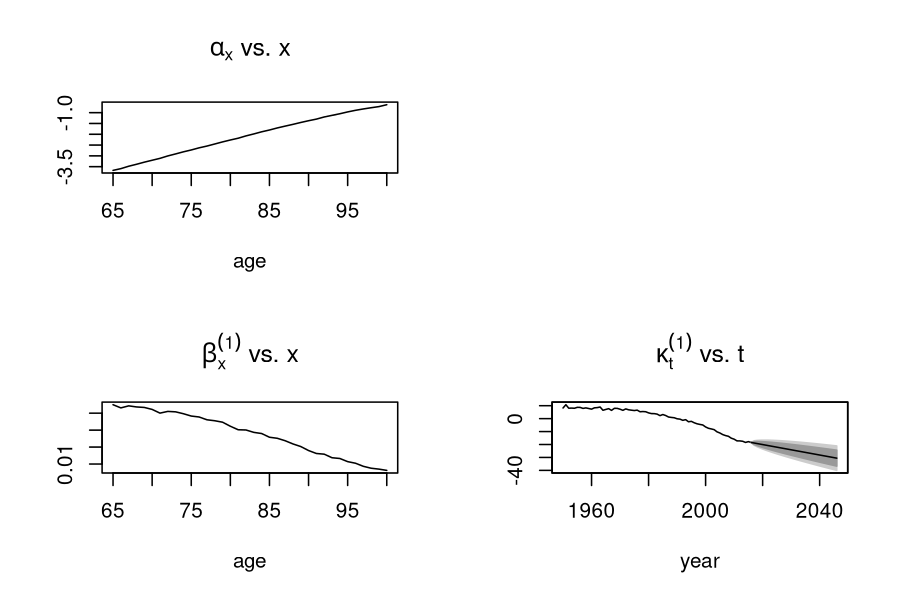
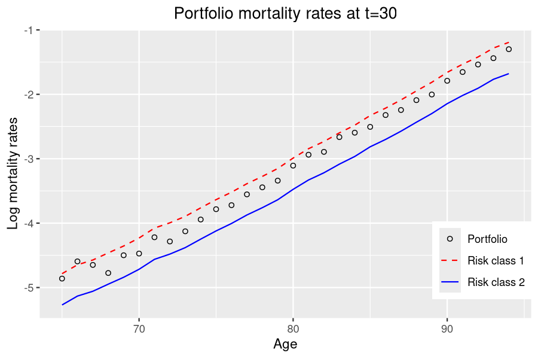
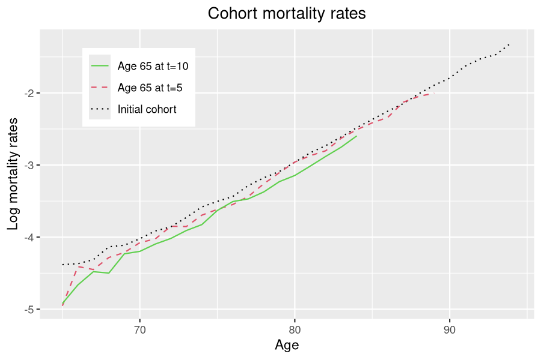

Insurance portfolio
Daphné Giorgi, Sarah Kaakai, Vincent Lemaire
Source:vignettes/IBMPopSim_insurance_portfolio.Rmd
IBMPopSim_insurance_portfolio.RmdThis vignette provides an example of usage of the package IBMPopSim, for simulating an heterogeneous life insurance portfolio.
See vignette('IBMPopSim') for a detailed presentation of the package.
1 Example description
We consider a insurance portfolio composed of males policyholders, characterized by their age and risk class (for instance smokers vs non smokers).
Entries to the portfolio are modeled by Poissonian events, and individuals can die or exit the portfolio with an intensity depending on their age and risk class.
2 Population creation
We start with an initial population of 10 000 males of age 65, distributed uniformly in each risk class.
The population data frame has thus the two (mandatory) columns:
- birth : Date of birth of the policyholders (here the initial time is \(t_0=0\)).
- death: Date of death (NA if alive).
and the column risk_cls corresponding to the policyholders risk class.
N <- 30000 pop_df <- data.frame("birth"=rep(-65,N),"death"=rep(NA,N),"risk_cls"= rep(1:2,each= N/2))
3 Model parameters
3.1 Death intensity
Death intensities are calibrated on England and Wales (EW) males mortality data (source: Human Mortality Database), and forecasted over t=30 years by a Lee-Carter model with the package StMoMo.
Individuals in the risk class 1 are assumed to have mortality rates 20% higher that the forecasted mortality rates and individuals in the risk class 2 are assumed to have mortality rates 20% lower than the forecasted rates. The death intensity of a individual in risk class \(i=1,2\) is thus the function
\[\begin{equation} \tag{3.1} d^i(t,a)= \alpha_i \sum_{k=0}^{29}\mathbb{1}_{\{k\leq t < k+1\}} d_k(a), \quad \alpha_1 = 1.2, \quad \alpha_2 = 0.8, \end{equation}\]
and where \(d_k(a)\) is the point estimate of the mortality rate for age \(a\) and year \(2017 + k\).
EWStMoMoMale <- StMoMoData(EWdata_hmd, series = "male") #Fitting LC <- lc() ages.fit <- 65:100 years.fit <- 1950:2016 LCfitMale <- fit(LC, data = EWStMoMoMale, ages.fit = ages.fit, years.fit = years.fit) ## StMoMo: Start fitting with gnm ## Initialising ## Running start-up iterations.. ## Running main iterations..... ## Done ## StMoMo: Finish fitting with gnm
t <- 30
LCforecastMale <- forecast(LCfitMale, h = t) plot(LCforecastMale)

Age and time dependent function can be created with the package function ?piecewise_xy, with allows to define age-specific mortality rates, piecewise constant in time, such as \(d^i\) in (3.1).
d_k <- apply(LCforecastMale$rates, 2, function(x) stepfun(66:100, x)) breaks <- 1:29 death_male <- piecewise_xy(breaks,d_k)
death_male(10,65) # Death rate at time t=10 (years 2027) and age 60. ## [1] 0.009082013
3.2 Exit events
Individuals exit the portfolio at a rate $ ^i$, \(i=1,2\) depending on their risk class.
params$mu <- c(0.001,0.06) # Exit event rate
4 Events creation
4.1 Death events creation
The vector parameter alpha will be transformed into a C++ vector (with index starting at 0) during the model creation, and death_male into a C++ function.
death_event <- mk_event_individual( type = "death", intensity_code = "result = alpha[I.risk_cls -1]*death_male(t,age(I, t));" )
4.2 Exit events creation
Each individual in the portfolio can exit the portfolio at a constant (individual) rate \(\mu^i\) depending on their risk class.
In the presence of events of type exit in the population, a characteristic named out is automatically added to the individuals characteristics, set to FALSE by default.
When an individual leaves the population, his characteristic out is set to TRUE and the date at which he exited the population is recorded in the column death.
exit_event <- mk_event_individual( type = "exit", intensity = "result = mu[I.risk_cls-1]; " )
4.3 Entry event creation
New policyholders enter the population at a constant rate \(\lambda\) (on average, \(\lambda\) individuals enter the portfolio each year). A new individual entering the population at age \(a\) given by a uniform variable on [65,70], and is in risk class 1 with probability \(p\).
In the presence of events of type entry in the population, a characteristic named entry is automatically added to the individuals characteristics, set to NA by default.
When an individual leaves the population, his characteristic entry is set to the date \(t\) at which he enters the population.
params$p <- 0.5
entry_event <- mk_event_poisson( type = "entry", intensity = "lambda", kernel_code = "if (CUnif()<p) newI.risk_cls =1; else newI.risk_cls= 2; double a = CUnif(65,70); newI.set_age(a,t);" )
Entries can also occur at a rate \(\lambda(t)\) depending on time. See documentation of ?mk_event_poisson_inhomogeneous.
5 Model creation
model <- mk_model( characteristics = get_characteristics(pop_df),# Characteristics names ant type events = list(death_event,entry_event, exit_event), # Events list parameters = params # Model parameters ) ## [1] "entry event: add 'entry' as individual attributes" ## [1] "exit event: add 'out' as individual attributes" summary(model) ## Events: ## #1: individual event of type death ## #2: poisson event of type entry ## #3: individual event of type exit ## --------------------------------------- ## Individual description: ## names: birth death risk_cls entry out ## R types: double double integer double logical ## C types: double double int double bool ## --------------------------------------- ## R parameters available in C++ code: ## names: death_male alpha mu lambda p ## R types: closure vector vector double double ## C types: function_xy arma::vec arma::vec double double
6 Simulation
6.1 Computation of event intensity bounds
(needed for acceptance/rejection algorithm)
For events with Poisson (constant) intensity, the bound is simply the intensity.
6.2 Simulation
sim_out <- popsim(model = model, population =pop_df, events_bounds = c('death' = death_max, "entry"=params$lambda, "exit"=max(params$mu)), parameters = params, time = t, age_max = 110, multithreading = TRUE) ## Warning in popsim(model = model, population = pop_df, events_bounds = c(death = ## death_max, : Add 'entry' attributes to the population. ## Warning in popsim(model = model, population = pop_df, events_bounds = c(death = ## death_max, : Add 'out' attributes to the population. ## Simulation on [0, 30]
Ratio of accepted events
sim_out$logs[["effective_events"]] / sim_out$logs[["proposed_events"]] ## [1] 0.2511726
7 Outputs
sim_out$population is a data frame composed of all individuals present in the portfolio over the period [0,t] (individuals in the initial population and who entered the portfolio). Each line corresponds to an individual, with his date of birth, date of death (NA if still alive at the end of the simulation), risk class, and the characteristic out.
The characteristics out is set to TRUE for individuals who left the portfolio due to an exit event.
str(sim_out$population) ## 'data.frame': 929463 obs. of 5 variables: ## $ birth : num -65 -65 -65 -65 -65 -65 -65 -65 -65 -65 ... ## $ death : num NA NA NA NA NA NA NA NA NA NA ... ## $ risk_cls: int 1 1 1 1 1 1 1 1 1 1 ... ## $ entry : num NA NA NA NA NA NA NA NA NA NA ... ## $ out : logi FALSE FALSE FALSE FALSE FALSE FALSE ...
The function ?age_pyramidcomputes the age pyramid of a population data frame at a given time.
7.1 Age pyramids
age_grp <- 65:98 pyr = age_pyramid(sim_out$population, time = 30, ages=age_grp) plot_pyramid(pyr, age_breaks = as.integer(seq(1,length(age_grp)-1,by=2)))

In order to visualize both risk classes on the same age pyramid with ?plot_pyramid a column group_name containing the individuals risk classes must be added to the age pyramid, and the colors representing each subgroup have to be specified.
colnames(pyr)[2]<- "group_name" pyr$group_name <- as.character(pyr$group_name) colors <- c("1"="#00AFBB","2"="#FC4E07") plot_pyramid(pyr,colors,age_breaks = as.integer(seq(1,length(age_grp)-1,by=2)))

7.2 Life tables
Death and exposure tables can be computed from the simulation, taking into account the censoring due to exit events.
Note that when individuals enter the population at different ages, the package functions ?death_table and ?exposure_tabledo not take into account this right censoring.
7.2.1 Risk class 1
Death and exposure data can be computed from the simulated portfolio. Below is an example with individuals in risk class 1. A Lee-Carter model is reestimated from the simulated data, and compare with the initial forecast.
age_grp <- 65:95
Dx <- death_table(sim_out$population[sim_out$population$risk_cls==1,], ages=age_grp,period =0:30) Ex <- exposure_table(sim_out$population[sim_out$population$risk_cls==1,], ages = age_grp, period = 0:30)
LC <- lc() LCfitSim1 <- fit(LC, Dxt = Dx , Ext = Ex,ages=age_grp[-length(age_grp)]) ## Warning in fit.StMoMo(LC, Dxt = Dx, Ext = Ex, ages = age_grp[-length(age_grp)]): StMoMo: 300 data points have ## non-positive exposures and have been zero weighted ## Warning in fit.StMoMo(LC, Dxt = Dx, Ext = Ex, ages = age_grp[-length(age_grp)]): StMoMo: 300 missing values which have been zero weighted ## StMoMo: The following cohorts have been zero weigthed: -93 -92 -91 -90 -89 -88 -87 -86 -85 -84 -83 -82 -81 -80 -79 -78 -77 -76 -75 -74 -73 -72 -71 -70 ## StMoMo: Start fitting with gnm ## Initialising ## Running start-up iterations.. ## Running main iterations.......................... ## Done ## StMoMo: Finish fitting with gnm
time <- 30 plot(age_grp[-length(age_grp)], LCfitSim1$ax + LCfitSim1$bx*LCfitSim1$kt[t], col="red", main ="Log mortality rates in risk class 1 at t=30",xlab = "age",ylab="log mortality rates") lines(age_grp[-length(age_grp)],log(1.3*LCforecastMale$rates[1:(length(age_grp)-1),t]),col="blue") legend(x="bottomrigh", legend=c("Estimated mortality rates", "Point forcast"), col=c("red", "blue"),lty=c(NA,1),pch=c(1,NA))
7.2.2 Global portofolio
Due to the mortality differential between risk class 1 and 2, there should be more individuals in risk class 2 at higher ages. However, due to exit events, more individuals in risk class 1 one exit the portfolio over time, leading to a higher proportion of individuals in risk class 1 at higher ages than expected when there are no exit events. Thus, mortality rates are closer to mortality rates in risk class 1 at higher ages.
Computation of central mortality rates
Dx_pop <- death_table(sim_out$population, ages= age_grp,period =0:30) Ex_pop <- exposure_table(sim_out$population, ages = age_grp, period = 0:30)
mx_pop <-Dx_pop/Ex_pop
time <- 30 plot(age_grp[-length(age_grp)],log((Dx_pop/Ex_pop)[,time]),main= "Portfolio log mortality rates at t=30", xlab="age",ylab="log mortality rates") lines(age_grp[-length(age_grp)],log(1.3*LCforecastMale$rates[1:(length(age_grp)-1),time]),col = "#00AFBB") lines(age_grp[-length(age_grp)],log(0.8*LCforecastMale$rates[1:(length(age_grp)-1),time]),col="#FC4E07") legend(x="bottomrigh", legend=c("Portfolio", "Risk class 1","Risk class 2"), col=c("black","#00AFBB","#FC4E07"),lty=c(NA,1,1),pch=c(1,NA,NA))

Evolution of portfolio mortality rates over time
The decrease in mortality rates is slower in the portfolio than in the global population due to composition changes.

Cohort mortality rates
plot(65:94,log(extractCohort(mx_pop, age= 65, period =0)),type="l") lines(65:89,log(extractCohort(mx_pop, age= 65, period =5)),col = "#00AFBB") lines(65:84,log(extractCohort(mx_pop, age= 65, period =10)),col="#FC4E07") legend(x="bottomrigh", legend=c("Initial cohort", "Age 65 at t=5","Age 65 at t=10"), col=c("black","#00AFBB","#FC4E07"),lty=c(1,1,1))

8 Different simulations with the same model
The initial population and model parameters can be modified without have to recompile the model, in order to simulate the population model with different input. The event bounds must be modified accordingly before running again the simulation.
A event can also be deactivated by setting the event bound to 0.
See vignette('IBMPopSim_human_pop') for several examples.